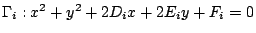
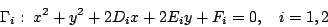
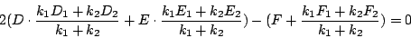
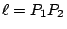

| |
直線與圓是平面上最為精簡的一維子集，而平面與球則是空間中最為精簡的二維子集。在解析幾何中它們都可以用一個簡單的方程式去刻劃之。
【定理 6.1】：在平面上（或空間內）一條直線（或一個平面）的點的坐標滿足一個
{x,y}（或 {x,y,z}）的一次方程式。反之，任給一個二元（或三元）一次方程式的所有「解點」構成的子集乃是 (x,y)-平面上
（或 (x,y,z)-空間內）的一條直線（或一個平面）。
証明：設 P0(x0,y0)（或
P0(x0,y0,z0)）是直線
 （或平面 Π）的取定一點，而 P(x,y)（或 P(x,y,z)）則是
（或 Π）上的任意點。再者，如 [圖 6-3] 所示，令
（或
）是平面上（或空間內）和
（或 Π）垂直的向量： （或平面 Π）的取定一點，而 P(x,y)（或 P(x,y,z)）則是
（或 Π）上的任意點。再者，如 [圖 6-3] 所示，令
（或
）是平面上（或空間內）和
（或 Π）垂直的向量：
[ 圖 6-3 ]
則有
亦即
（或
）乃是上述二元（或三元）一次方程的「解點子集」。
反之，設 S（或 S*）分別是下述二元（或三元）一次方程的解點子集，即
令 P0(x0,y0)（或
P0(x0,y0,z0)）是 S（或 S*）中取定一點而
P(x,y)（或 P(x,y,z)）則是 S（或 S*）中任意一點，則有
兩者相減，即得
由此可見 S（或 S*）乃是平面上（或空間中）過 P0 點而且和向量
（或
）垂直的那條直線（或那個平面）是也。
□
[註]：上述論証中所建立的直線（或平面）和二元（或三元）一次方程式之間的相互對應，顯示了方程式中變元的系數組（亦即 (a,b) 或 (a,b,c)）乃是直線（或平面）的一個法向量的分量。一條直線（或一個平面）在平面上（或空間中）的所有非零法向量之間只差一個 k-倍。由此可見，一條直線（或一個平面）所對應的二元（或三元）一次方程式之間，也只差一個 k-倍。
【定理 6.2】（點、線或點、面的距離公式）：設
P1(x1,y1)（或
P1(x1,y1,z1)）是平面上（或空間內）給定一點，而
（或 Π）則是以
為其方程的直線（或平面），則有下述距離公式：
証明：如 [圖 6-4] 所示
乃是 （或 Π）的兩個單位長法向量 和 ，而 P0
則是其上任取一點
[ 圖 6-4 ]
則有
【習題】：
- (1)
- 試寫下過平面上（相異）兩點 P1(x1,y1), P2(x2,y2)
的直線的方程式。
- (2)
- 試寫下過空間中（不共線）三點
P1(x1,y1,z1),
P2(x2,y2,z2),
P3(x3,y3,z3) 的平面的方程式。
- (3)
- 試寫下過平面上一點 P0(x0,y0) 並垂直于向量
的直線的方程式。
- (4)
- 試寫下過空間中一點
P0(x0,y0,z0) 並垂直于向量
的平面的方程式。
- (5)
- 試寫下兩條直線的兩條交角平分線的方程式。
- (6)
- 試寫下兩個平面的兩個兩面角平分面的方程式。
- (7)
- 問在平面上兩線（或空間中兩面）平行的條件為何？
【定理 6.3】：平面上（或空間中）以 P0(x0,y0)（或
P0(x0,y0,z0)）為圓心（或球心）以 R 為半徑的圓（或球）的方程式如下，即
証明：是距離公式和圓與球的定義的直接推論。
□
【推論】：平面上（或空間中）一個圓（或球）所相應的方程式皆可寫成下述形式，即
其中 D2+E2-F（或 D2+E2+F2-G）乃是其半徑之平方，所以必須非負。反之，任給滿足
（或
）的上述二元（或三元）二次方程式的解點子集乃是一個圓（或球）。
証明：令
(x0,y0)=(-D,-E)（或
(x0,y0,z0)=(-D,-E,-F)），則易見上述二元（或三元）二次方程式可以改寫成：
□
【引理】：設
, i=1,2，則  , ,
 互相正交的充要條件是其系數滿足下列條件： 互相正交的充要條件是其系數滿足下列條件：
2(D1D2+E1E2)-(F1+F2)=0
証明：由上面[推論]易見 , i=1,2, 的圓心 Oi
的坐標為 (-Di,-Ei)；而其半徑平方則為
ri2=Di2+Ei2-Fi。
[ 圖 6-5 ]
再者，由 [圖 6-5] 中可見兩圓正交的充要條件就是
，即
(D2-D1)2+(E2-E1)2-(D12+E12-F1)-(D22+E22-F2)=0
亦即
【定理 6.4】：設 Γ 和兩個圓

都互相正交，則 Γ 和由 , 所生成的圓系，即
k1(x2+y2+2D1x+2E1y+F1)+k2(x2+y2+2D2x+2E2y+F2)=0
其中每一個圓都是正交的。
証明：設 Γ 的方程式為
則由所設的正交性即有
再者，由 , 所生成的圓系中的任給一圓的方程式可以改寫成標準式為
由 (1), (2) 易得

所以它也是和 Γ 正交的。
□
【習題】：
- (1)
- 試寫下過平面上（不共線）三點 P1(x1,y1), P2(x2,y2),
P3(x3,y3) 的圓的方程式。
- (2)
- 試寫下過空間中（不共面）四點
P1(x1,y1,z1),
P2(x2,y2,z2),
P3(x3,y3,z3),
P4(x4,y4,z4) 的球的方程式。
- (3)
- 試求分別以下述方程式表達的直線與圓相交于兩點，相切和不相交的系數條件式：
- (4)
- 試求分別以下述方程式表達的平面與球相交于一圓，相切于一點和不相交的系數條件式：
- (5)
- 設 P1(x1,y1) 是位于圓 Γ 外的一點，而 Γ
的方程式是
試求如 [圖 6-6] 所示由 P1 到 Γ 的切線長平方的公式（其值叫做
P1 點對于 Γ 的冪）。
[ 圖 6-6 ]
- (6)
- 等冪軸：設 , 是相異兩圓，其方程分別為
和 , 的切線長相等的點集叫做它們的等冪軸，試求其方程式。
- (7)
- 如 [圖 6-7] 所示，
乃是一個以
 為直徑的圓。令 ,
為 x-軸上給定兩點，連結 和 使得兩線分別相交
Γ 于 Q1, Q2 兩點。 為直徑的圓。令 ,
為 x-軸上給定兩點，連結 和 使得兩線分別相交
Γ 于 Q1, Q2 兩點。
[ 圖 6-7 ]
- (i)
- 寫下
 , ,  的方程。令
為下述組合所得的二次曲線 的方程。令
為下述組合所得的二次曲線
注意 C, Q1, Q2 都在 之上。試求一個適當的值
使得 可以被 (y-1) 所整除。
- (ii)
- 上述特殊的 令
分解成兩個一次方程式的乘積，即
其中  。求 P1, P2 的坐標（亦即 c1, c2 的值）。
- (iii)
- 試用上面所得者來描述一個幾何作圖方法來求解二次方程 x2-px+q=0 。
|
|
|